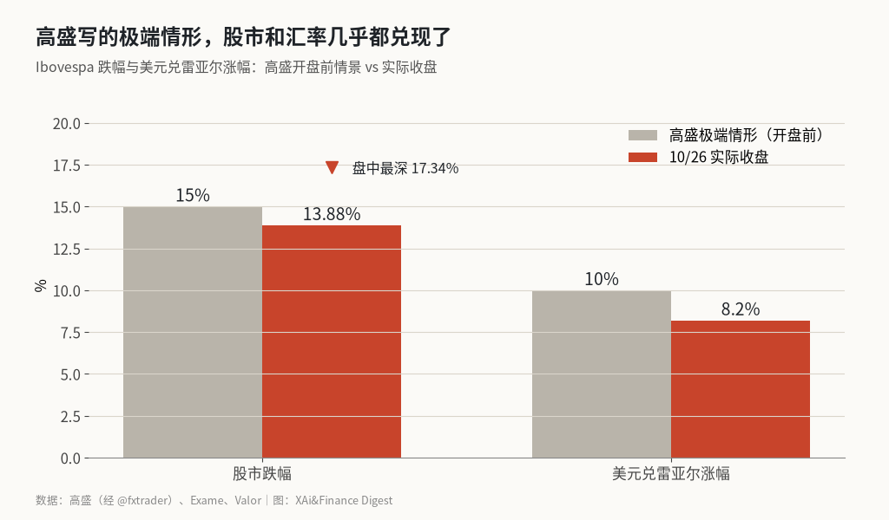
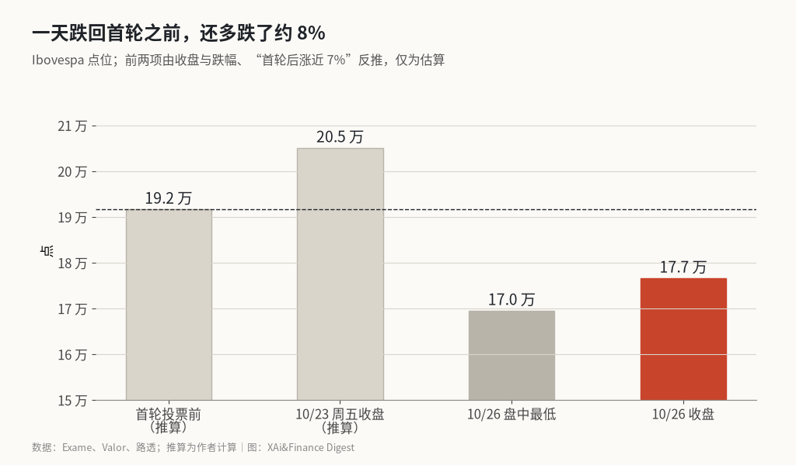

巴西一天跌掉 13.88%：高盛写好的极端情形，几乎原样兑现
首轮投票后巴西股市涨了近 7%，卢拉连任后一天跌回去还不够，复利算下来比首轮前还低约 8%。
这里算的是一个复利：从 10 月 4 日首轮投票前到 10 月 26 日收盘，巴西 Ibovespa 指数一共变了多少。路透报道，到上周五收盘，指数比首轮投票前高了近 7%。周一收盘跌 13.88%。两段连起来是 1.07 乘以 0.8612，约 0.92，也就是比首轮前还低约 8%，这是我算的。市场为博索纳罗胜选提前涨的那一截全部吐了出来，还多赔了一截。
我的判断是：这次下跌主要是押错方向后的重新定价，高盛在开盘前写下的极端情形，股市和汇率两项几乎都兑现了。
高盛的极端情形和实际收盘，对比见图

周一开盘前，@fxtrader 转述了高盛的一份情景分析：巴西可能出现美元兑雷亚尔上涨 10%、长期国债收益率上升 200 个基点、信用利差走阔 30 到 40 个基点、股市下跌 15% 的极端行情。
实际收盘，Ibovespa 跌 13.88%，收在 176,608.23 点，盘中最深跌 17.34%，最低 169,516.43 点。据巴西财经媒体 Exame，美元兑雷亚尔收涨 8.2%。股市和汇率两项都落在高盛给的极端值附近，股市盘中甚至跌穿了 15%。
这是 2020 年 3 月 12 日以来最大的单日跌幅，那一天跌了 14.78%。巴西交易所 B3 开盘即触发熔断，暂停交易 30 分钟，是新冠以来第一次。全天成交 886 亿雷亚尔，约为平时的 3 倍。
市场为什么押错
首轮投票时，弗拉维奥·博索纳罗以 47.03% 领先卢拉的 45.16%。之后预测市场一边倒，按 @TopStockAlerts1 的整理，Kalshi 和 Polymarket 一度给博索纳罗超过 80% 的胜选概率。资金据此提前买入巴西资产，路透的数据是雷亚尔在这段时间升值约 5%。
10 月 25 日的决选里，卢拉以 51.75% 对 48.25% 胜出。那一截押注变成了要还的钱。
汇率也可以照同样的方法算：雷亚尔先升约 5%，再跌到美元涨 8.2%，1.05 除以 1.082 约 0.97，比首轮前弱约 3%。这一项比股市的复利跌幅温和得多，是我算的粗略值。
从首轮前到周一收盘，指数路径见图

图里有两个点是推算的。上周五收盘约 20.5 万点，用周一收盘除以 0.8612 得出；首轮前约 19.2 万点，再除以 1.07 得出。真实值以 B3 公布的为准。
个股分化很大。据 Estadão，零售商 Magalu 一天跌 58.23%，纸浆出口商 Suzano 涨 10.08%。雷亚尔贬值对出口商是利好，对依赖国内消费和借贷的公司是双重打击。Kalshi 报道，巴西最大的石油公司巴西国家石油跌超 10%。
海外的反应更早。@StockMKTNewz 发帖称，巴西 ETF（EWZ）在美股夜盘一开盘就跌了近 20%。芝加哥大豆期货最深跌 1.7%，跌到两个月新低，@fxtrader 转述的逻辑是市场预期巴西会和中国走得更近，挤占美国在中国大豆进口里的份额。
总的判断
这次下跌的大部分是在还首轮之后的押注，剩下的一截是对卢拉第二个任期财政路径的重新定价。前一部分是一次性的，后一部分要看政策。2054 年到期的巴西美元债收益率升到 7.45%，说明外部融资成本已经抬了上去。
风险在于下跌从情绪变成基本面。如果雷亚尔继续贬值、通胀抬头，央行被迫加息，成长股和内需股会承受第二轮压力。X 上的观点几乎一边倒看空，@bboczeng 甚至把它看作全球政局动荡的第一张骨牌。
机会在于定价过度的地方。按我的复利算法，指数已经比首轮前低约 8%，雷亚尔只比首轮前弱约 3%，股市跌得比汇率多。出口商在雷亚尔贬值中受益，Suzano 当天的上涨就是例子。@TraderS18 的看法是卢拉连任本身对全球影响不大，这次冲击主要停留在巴西内部。
后续有三个数字可以检验。一是 Ibovespa 能否守住周一盘中低点 169,516 点，跌破意味着重估还没结束。二是雷亚尔汇率，如果美元涨幅超过高盛给的 10%，市场押的就不只是这次选举。三是卢拉新内阁里财政部长的人选，这一任命会直接决定长端利率往哪走。
X 上怎么看
结论 · 偏空共识：0 位看多，7 位看空，3 位中性/分歧。X 上几乎一边倒看空，分歧只在于这是一次性重估还是长期问题。
▼ 看空7 位
观点为 X 用户当日公开帖子的中文摘要，忠于原文但有删减；标「未核实」的为预测、个人推测或单一来源说法。立场为人工判断。
数据来源
- 收盘点位、跌幅、盘中低点、成交额与 2020 年对比以 Exame 和 Valor 为准；美元涨 8.2% 来自 Exame。
- “首轮后涨近 7%”和“雷亚尔升约 5%”来自路透，是近似值，复利结果只能当粗略估计。
- 上周五收盘约 20.5 万点、首轮前约 19.2 万点为作者用跌幅反推，非官方数据。
- X 上有帖子写“指数暴跌 25%”，与收盘数据不符，未采用；EWZ 收盘跌幅只见单一来源，正文只用夜盘开盘数据。
- 2054 年美元债收益率 7.45% 来自路透报道。
- https://exame.com/invest/mercados/ibovespa-fecha-em-baixa-de-139-maior-queda-diaria-em-6-anos-dolar-dispara-82/
- https://valor.globo.com/financas/noticia/2026/10/26/ibovespa-passa-por-circuit-breaker-e-cai-quase-14percent-com-liquidacao-apos-vitoria-de-lula.ghtml
- https://finance.yahoo.com/news/investors-expect-markets-unwind-brazils-040903760.html
- https://economia.uol.com.br/noticias/reuters/2026/10/26/b3-cita-queda-de-10-e-aciona-circuit-breaker-na-abertura-do-pregao-a-vista-apos-reeleicao-de-lula.htm
- https://www.estadao.com.br/einvestidor/cenarios-e-mercado/magalu-tomba-mais-de-59-e-bancos-perdem-r-249-bi-veja-as-maiores-altas-e-baixas-do-ibovespa/
- https://x.com/fxtrader/status/2114550813742010855
- https://x.com/fxtrader/status/2114510908395528267
- https://x.com/fxtrader/status/2114644216387424430
- https://x.com/bboczeng/status/2114586584226132181
- https://x.com/bboczeng/status/2114578155642257679
- https://x.com/StockMKTNewz/status/2114513872619286636
- https://x.com/Polymarket/status/2114706444557693171
- https://x.com/Kalshi/status/2114537631136756092
- https://x.com/TopStockAlerts1/status/2114782290060407190
- https://x.com/TraderS18/status/2114531306147365195